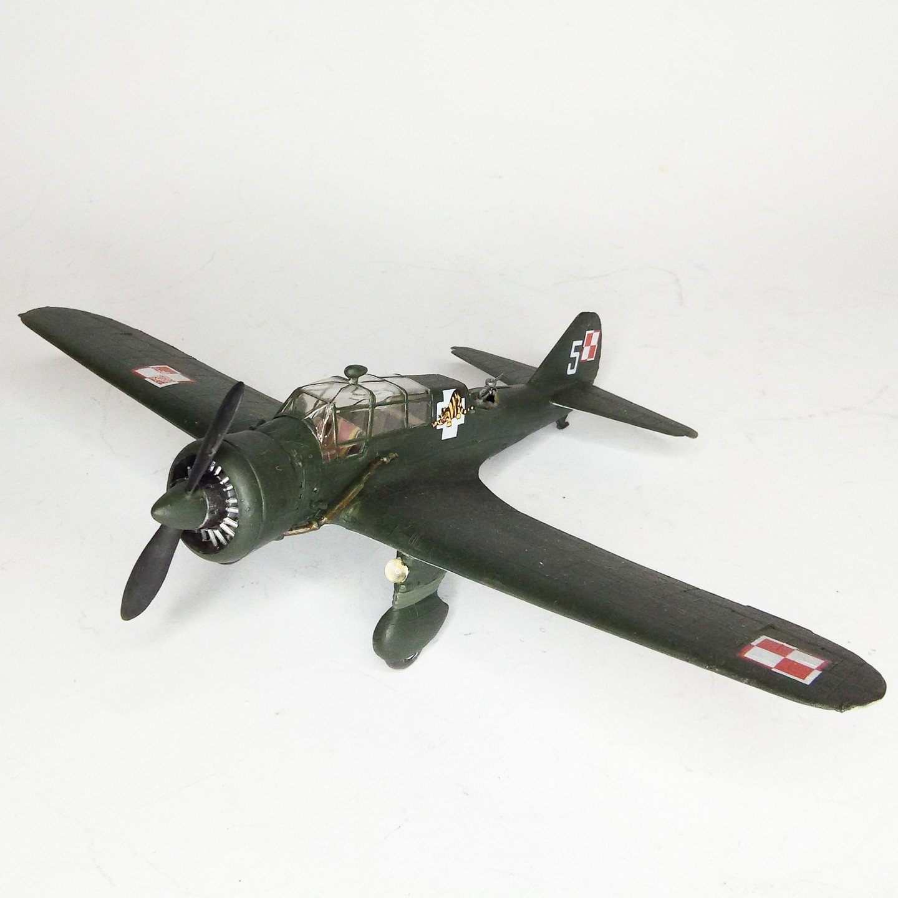
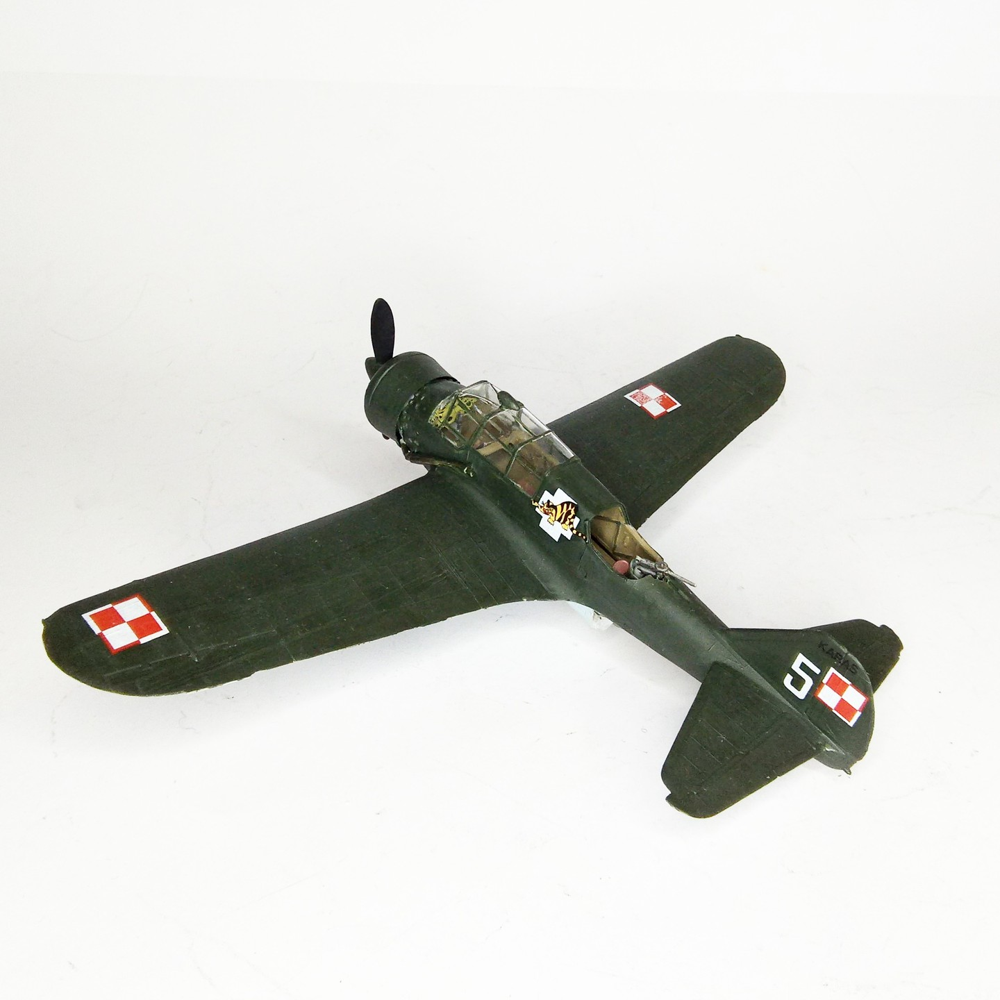

Aerei · scale model archive
PZL P-23 B Karas
PZL P-23 B Karas — Kit: Heller, Scale: 1/72. 55 Escadrille Brig de Bombardment 1939 Note the asymmetric national insigna, allegedly aimed to confound the…

Photo gallery

English description
55 Escadrille Brig de Bombardment 1939
Note the asymmetric national insigna, allegedly aimed to confound the attacker
#1/72 #Heller #Karas
Descrizione italiana
55 Escadrille, Brig de Bombardment, 1939. Da notare le insegne nazionali asimmetriche, presumibilmente pensate per confondere l’attaccante.